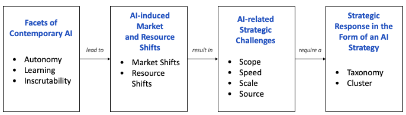

Introduction to AI (I2AI)
Neu-Ulm University of Applied Sciences
June 5, 2026
What challenges have you observed or heard about when organisations try to use AI in practice?
Understanding how generative AI works is one thing.
Knowing what to do with it inside an organisation is another.
The shift from recognition to generation, and now toward agentic systems, has not just expanded what AI can do but fundamentally changed the management challenge.
The same properties that make modern AI powerful are also what make it difficult to govern (Urbach, Feulner, & Dilger, 2026):
Organisations today face three major challenges (Urbach, Feulner, & Dilger, 2026):
None of these challenges can be solved by understanding the technology better.
Why do you think most AI projects fail — even when the underlying technology works?
AI projects fail more often than they succeed. Not because the technology doesn’t work, but because organisations launch them without strategic direction (Urbach, Feulner, Mayer, & Meierhöfer, 2026).
AI doesn’t merely improve efficiency. It changes the conditions under which organisations compete:
These shifts require a strategic response.
An AI strategy is a set of guidelines for courses of action and decisions that directs AI projects in line with firm-specific goals and constraints toward a distinct strategic direction. (Urbach, Feulner, Mayer, & Meierhöfer, 2026).
Why does AI specifically require its own strategy? Urbach, Feulner, Mayer, & Meierhöfer (2026) lay out a four-step chain of reasoning:

Figure 1: Chain of argumentation for the need for an AI strategy. Adapted from Urbach, Feulner, Mayer, & Meierhöfer (2026, p. 163).
AI introduces strategic challenges across four dimensions
A coherent AI strategy means making deliberate, consistent choices across all four dimensions.
The configuration across the 4S dimensions depend on the organization’s strategic archetype
| Archetype | Strategic orientation | Examples |
|---|---|---|
| Technology Navigator | Pushes AI boundaries through R&D; undertakes risky but rewarding projects to achieve technological breakthroughs at the forefront of AI | JPMorgan, Microsoft, Infineon, SAP |
| Innovation Explorer | Delves into promising emerging territories; invests substantially in AI to unlock new value streams alongside existing products and services | American Express, Bayer, E.ON, Volkswagen |
| Business Enhancer | Focuses on improving operational performance with AI; explores initial use cases but is cautious about widespread application | MTU Aero Engines, P&G, Linde, Chevron |
| Operations Stabilizer | Resorts to AI in only a few isolated use cases; prefers stability and reliability over breakthrough innovations due to potential risks | Henkel, Nike, McDonald’s, Coca-Cola |
Identifying the right archetype matters because each implies a different set of operational decisions:
Misalignment between archetype and actual decisions is a primary driver of AI project failure.
An organisation that behaves like an Innovation Explorer in its use-case selection but like an Operations Stabilizer in its resourcing will run ambitious experiments with inadequate infrastructure. The archetype identification makes these misalignments visible before they become expensive.
A regulated utility pursuing an Operations Stabilizer approach may be making a more rational strategic choice than a startup chasing cutting-edge technology it cannot sustain.
What matters is internal consistency:
The chosen archetype should be coherent with the organisation’s competitive context, and all four strategic dimensions (“4S”) should point in the same direction.
The goal of AI strategizing is not to maximise technological ambition but to match strategic posture to organisational reality.
Misalignment between archetype and actual decisions is a primary driver of AI project failure.
AI readiness is the preparedness of an organisation to implement changes involving AI applications and technology. (Alsheibani et al., 2018)
The concept matters because strategy on paper does not equal strategy in practice. An organisation may choose the right archetype and still fail to execute, because the necessary conditions are not in place. AI readiness identifies those conditions.
Before any AI-specific factors, organisations must have a baseline capacity to adopt and sustain new technology at all:
These factors are necessary but not sufficient. AI adds further demands on top of them.
Readiness is not a binary state.
When you hear “AI governance”, what comes to your mind?
An AI strategy tells an organisation what to pursue. Governance answers under what conditions and according to what rules.
Without governance, even a well-designed strategy degrades in practice:
The case for governance is not primarily ethical. It is operational. AI systems learn from data, behave probabilistically, fail in subtle and delayed ways, and are often opaque even to their builders. Standard IT controls are necessary but not sufficient.
Governance mechanisms are structured frameworks, policies, procedures, and controls that guide, monitor, and manage operations to ensure alignment with organisational objectives, ethical standards, and regulatory requirements. AI governance specifically addresses the complexity, opacity, and failure modes that are particular to AI systems and that increase uncertainty and risk in ways that generic IT governance does not fully capture (Urbach, Feulner, & Dilger, 2026).
Before deciding what governance is needed, an organisation must understand what it is governing against. AI-related risks arise at four levels (Urbach, Feulner, Feulner, et al., 2026):
These four risk categories are not independent. A technical failure (biased model) creates economic risk (damaged reputation), triggers regulatory scrutiny (GDPR, EU AI Act), and constitutes an ethical harm (discriminatory decisions). Governance must address all four simultaneously.
Effective AI governance is not a single policy or a compliance checklist. It is a portfolio of mechanisms at three complementary levels (Urbach, Feulner, & Dilger, 2026).
Note: Procedural mechanisms matter because AI behaviour emerges from training — not from rules. Without structured processes, there is no way to know whether a deployed model still behaves as expected.
Relational mechanisms are the most neglected — yet their absence is what causes structural and procedural frameworks to fail. A governance body that never convenes cross-functional dialogue produces documents, not accountability.
Governance does not appear fully formed. It must be built iteratively, and it must be integrated into existing governance structures, not layered on top as a separate system (Urbach, Feulner, Feulner, et al., 2026):
Several established frameworks provide concrete reference points:
The EU AI Act (Regulation 2024/1689) is the world’s first comprehensive, legally binding AI regulation. It applies to any AI system deployed in the EU, regardless of where the provider is based (from 2027 on).
For managing AI, three things matter most:
The Act’s defining design principle is proportionality: obligations scale with potential harm to people and society (European Commission, 2024).
For high-risk systems, the Act mandates (European Commission, 2024):
The Act deliberately distributes obligations across the AI value chain:
Many organisations are deployers of high-risk AI without having classified themselves as such.
Large foundation models (LLMs, diffusion models, multimodal systems) are regulated under a distinct regime as General Purpose AI (GPAI) systems.
GPAI presents a unique regulatory challenge: these models are not designed for a single application. Thus, risk cannot be fully assessed at development time.
The risk classification depends on the use case, not the underlying model. The same LLM used for a general chatbot (limited-risk) becomes high-risk in automated recruitment screening.
The EU AI Act sets minimum requirements. Meeting them is necessary but does not guarantee that a system is trustworthy or well-governed.
Compliance means the system meets the legal baseline for EU deployment.
The governance mechanisms (risk management, human oversight, structural accountability, relational transparency) are what transform compliance from a checklist into a genuine capability (Urbach, Feulner, & Mayer, 2026).